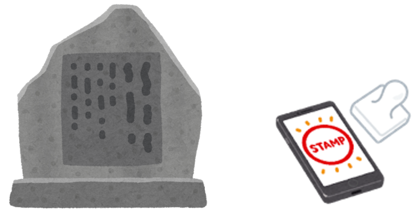
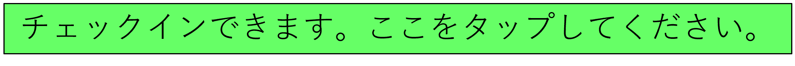

地図上のグリーンリーフ（緑の葉）は災害伝承碑などの場所を表しています。
いずれかをタップ（クリック）すると、災害伝承碑などの写真と名称が表示されます。また、現在地からの距離も表示されます。近くまで行けば、チェックインが可能となり、以下のような表示が出てきます。

これをタップ（クリック）するとデジタルスタンプがゲットできます。
ゲットしているデジタルスタンプは、スタンプ帳で確認できます。
※注意：
1)スマートフォンの位置情報へのアクセスを可能にしておいてください。
2)使用するスマートフォンやブラウザをかえると、過去にゲットしたデジタルスタンプは反映されません。
3)ブラウザはGoogle Chrome, Apple Safari, Microsoft Edge, Mozilla Firefoxで動作確認をしていますが、ブラウザのバージョンによっては動作しない可能性もあります。

スタンプを〇個以上ゲットした方には、先着〇〇名様に記念品を差し上げます。
和歌山県土砂災害啓発センターを訪問して、スマートフォンのスタンプ帳を提示してください。
すでにゲットしているすべてのスタンプを破棄してリセットします。一旦リセットすると復元はできません。
災害伝承碑の説明文は、以下の文献などを引用または参考にしています。それぞれの災害伝承碑の説明文中に文献番号を示しており、それらは以下の文献と対応しています。
1) 那智勝浦町：紀伊半島大水害ー平成28年9月 町を襲った台風12号の記録ー。
2) 国土交通省：［検証］2001年の自然災害、URL:https://www.mlit.go.jp/ river/pamphlet_jirei/bousai/saigai/2001/pdf/page014_015.pdf
3) 和歌山県：和歌山県災害史。
4) 国土交通省近畿地方整備局大規模土砂災害対策技術センター：60 年毎（1889 年, 1953 年, 2011 年）に繰り返される紀伊半島の歴史的大規模土砂災害、
URL:https://www.kkr.mlit.go.jp/kiisankei/center/img/saigaishi.pdf。
5) 国土交通省：十津川大水害について、URL:https://www.kkr.mlit.go.jp/ kinan/river/kumano_kondan/PDF/information_panel/19. pdf。
6) 国土交通省国土地理院：自然災害伝承碑、URL:https://www.gsi.go.jp/ bousaichiri/denshouhi.html。
7) 和歌山測候所：紀州災異誌。
8) 古座川町：二級河川古座川浸水実績図〔平成23年台風13号〕、URL:http://www.town.kozagawa.wakayama.jp/pdf/sinsuijisseki.pdf。
9) 十津川村：大水害の記録十津川村ー平成23年台風23号「紀伊半島大水害」ー。
10)新宮市：紀伊半島大水害 豪雨ー平成23年台風12号 発生から100日 新宮市の記録～未来につなぐメッセージ～ー。